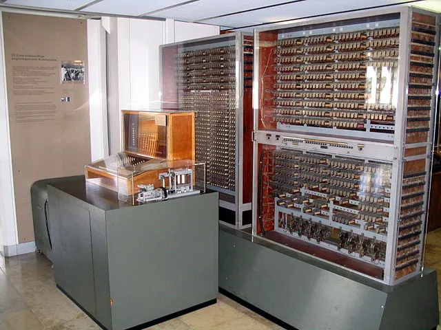

Kapitola 1: Historie počítačů
Dějiny počítačů zahrnují vývoj jak samotného hardware, tak jeho architektury a mají přímý vliv na vývoj softwaru. První číslicové počítače byly vyrobeny ve 30. letech 20. století, avšak za jejich vynálezce je přesto považován Charles Babbage, který již v 19. století vymyslel základní principy fungování stroje pro řešení složitých výpočtů. Počítačů stále přibývá, jejich výkon roste a postupně zasahují do nejrůznějších oblastí lidského života.

Mechanické počátky (19. století)
- Herman Hollerith: Využil děrné štítky pro sčítání lidu v USA (1890), jeho firma se později stala základem IBM.
Nultá generace (cca 1934–1945)
- Technologie: Elektromechanická relé, pomalé (cca 100 operací/s), hlučné.
- Z3 (Německo): Konrad Zuse sestrojil první funkční, programovatelný stroj (používal už dvojkovou soustavu).
- Colossus (UK): Elektronkový stroj pro lámání německých šifer (Lorenz) v Bletchley Park.
- Mark I (USA): Obří kalkulátor financovaný IBM pro námořnictvo.
První generace (1945–1950)
- Technologie: Vakuové elektronky. Obrovská spotřeba energie, časté poruchy, nulový OS (programování přepojováním kabelů).
- ENIAC: První plně elektronický univerzální počítač. Rychlý, ale náročný na provoz.
- Československo: Počítač SAPO (obsahoval relé i elektronky, měl 3 procesory, které se kontrolovaly hlasováním). Shořel kvůli oleji z relé.
Druhá generace (1951–1964)
- Technologie: Tranzistory. Zmenšení rozměrů, vyšší spolehlivost, nižší spotřeba.
- Pokrok: První operační systémy, dávkové zpracování a jazyky (FORTRAN, COBOL).
- Stroje: UNIVAC (komerční úspěch), československý EPOS (později ZPA 600).
Třetí generace (1965–1980)
- Technologie: Integrované obvody (čipy).
- Vlastnosti: Multitasking (více úloh najednou), sálové počítače (mainframe).
- Stroje: Legendární IBM System 360 (standardizace HW a SW), superpočítače Cray.
Čtvrtá generace (1981–současnost)
- Technologie: Mikroprocesor (CPU na jednom čipu).
- Vlastnosti: Osobní počítače (PC), grafické rozhraní, internet, miniaturizace.
- Milník: 1981 uveden IBM PC (otevřená architektura, vznik "IBM kompatibilních" PC).